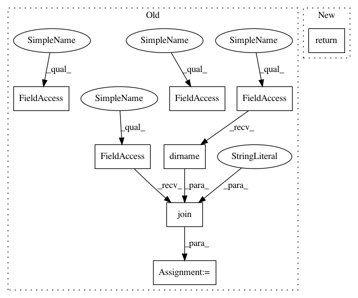

da821b12fbb8eb8cb1d2754ad82fe5c1bb53ac48,torchnlp/metrics/bleu.py,,get_moses_multi_bleu,#,30
Before Change
os.chmod(multi_bleu_path, 0o755)
except:
logger.info("Unable to fetch multi-bleu.perl script, using local.")
metrics_dir = os.path.dirname(os.path.realpath(__file__))
bin_dir = os.path.abspath(os.path.join(metrics_dir, "..", "..", "bin"))
multi_bleu_path = os.path.join(bin_dir, "tools/multi-bleu.perl")
// Dump hypotheses and references to tempfiles
hypothesis_file = tempfile.NamedTemporaryFile()
After Change
os.chmod(multi_bleu_path, 0o755)
except:
logger.warning("Unable to fetch multi-bleu.perl script")
return None
// Dump hypotheses and references to tempfiles
hypothesis_file = tempfile.NamedTemporaryFile()
hypothesis_file.write("\n".join(hypotheses).encode("utf-8"))
In pattern: SUPERPATTERN
Frequency: 3
Non-data size: 8
Instances
Project Name: PetrochukM/PyTorch-NLP
Commit Name: da821b12fbb8eb8cb1d2754ad82fe5c1bb53ac48
Time: 2018-06-02
Author: petrochukm@gmail.com
File Name: torchnlp/metrics/bleu.py
Class Name:
Method Name: get_moses_multi_bleu
Project Name: PetrochukM/PyTorch-NLP
Commit Name: da821b12fbb8eb8cb1d2754ad82fe5c1bb53ac48
Time: 2018-06-02
Author: petrochukm@gmail.com
File Name: torchnlp/metrics/bleu.py
Class Name:
Method Name: get_moses_multi_bleu
Project Name: ellisdg/3DUnetCNN
Commit Name: 2f426f57ccbb033c2e8f061d22a02080bde3791d
Time: 2020-08-13
Author: dgellis90@gmail.com
File Name: brats/train.py
Class Name:
Method Name: fetch_training_data_files
Project Name: pyinstaller/pyinstaller
Commit Name: 473e4cfe41c6acb2740832fbfbfe5a6d3b37776d
Time: 2020-12-08
Author: rok.mandeljc@gmail.com
File Name: PyInstaller/utils/hooks/__init__.py
Class Name:
Method Name: exec_script